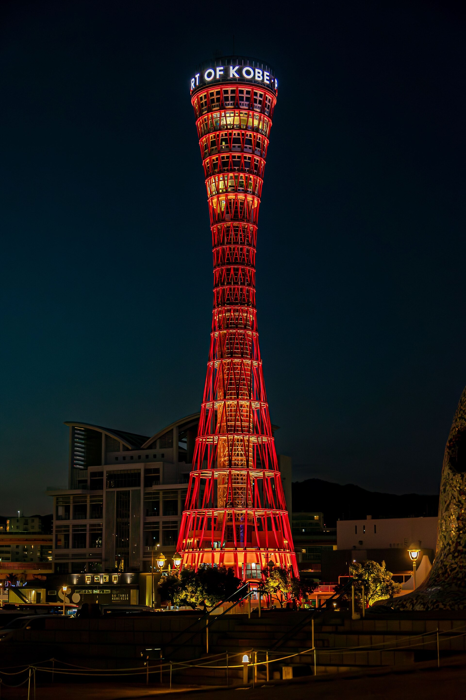

🌊 Day 3 姬路回程順遊 ✕ 歐風洋館 ✕ BE KOBE ✕ 神戶牛神戶港・十九世紀舊居留地 ✕ 港塔海風夕陽 ✕ 正宗神戶牛 O 型環線
起訖樞紐：JR 新快速「神戶三之宮站」西口 ➔「JR 元町站」（JR 新快速 21 分鐘直達大阪）。
適合情境：Day 3 從姬路城搭 JR 新快速返回時「順道下車」，享受海風夕陽、浪漫異國洋館與正宗極上神戶牛。
📜 開港近代史、港塔美學與正宗神戶牛傳奇
• 1868 年神戶開港與舊居留地「外國人自治領」：神戶是日本最早面向世界的門戶之一。舊居留地由英美工程師規劃，保留了大量石造洋館、拱形迴廊與百年煤氣路燈，充滿異國典雅風情。
• 神戶港塔 (Kobe Port Tower) 與 Meriken Park：建於 1963 年、以日本傳統「和樂鼓」為靈感的紅色雙曲面管狀建築，是世界第一座管狀構造觀光塔（2024 年全新整修重新開放）。站在海濱木棧道吹瀨戶內海晚風，看夕陽將紅色塔身與海面染成一片金紅。
• 400 年但馬牛純血統與 A5 神戶牛「霜降熔點」：神戶牛必須具備純正但馬牛血統，其霜降油花熔點極低（僅約 14°C~17°C），放入口中藉由人體體溫即可自然融化，帶來濃郁甘甜的肉汁。百年老舖 Mouriya 鐵板燒主廚以純熟火候香煎，是關西最極致的味蕾享受。
🗺️ 順向 O 型動線分步指引 (不走回頭路)
從姬路搭乘 JR 新快速中途於「三之宮站」下車，西口出發南向漫步於十九世紀舊居留地：欣賞英美古典石造建築、精品櫥窗與復古煤氣路燈。
步行 10 分鐘抵達神戶港 Meriken Park：
・在著名地標「BE KOBE」前拍紀念照。
・漫步海濱木棧道吹涼爽海風，看夕陽餘暉染紅海面與鮮紅色的神戶港塔。
步行 10 分鐘前往百年名店 Mouriya (モーリヤ)：品嚐主廚在鐵板前以純熟火候香煎的 A5 極上黑毛神戶牛排，搭配蒜片、岩鹽與現磨山葵，肉汁爆發、入口即化。
從 Mouriya 步行 5 分鐘至「JR 元町站」或「三之宮站」，搭乘 JR 新快速列車 21 分鐘直達 JR 大阪站，直接搭電梯回 大阪梅田站直結基地 飯店休息！
⚠️ 傍晚主題 6 實戰避坑 ✕ 社群真實負評 6 大盤點
• 真實負評：從三之宮走到舊居留地再到神戶港，單程走 20~25 分鐘，8 月盛夏傍晚體感悶熱；若白天剛爬完姬路城雙腿極吃力。
• 💡 實戰破解：善用**「City Loop 觀光巴士」**（單趟 260 円）直達美利堅公園；或 2~3 人在三之宮站前搭計程車（約 900~1,100 円/6分鐘），保留體力！
• 真實負評：「BE KOBE」巨型地標傍晚排隊常需等 15~25 分鐘；神戶港塔內部空間窄、假日排隊久且室內玻璃夜拍反光。
• 💡 實戰破解：BE KOBE 排太長可從「側面 45 度角」取景避開正面人潮；神戶港塔**在戶外廣場仰拍鮮紅外觀即可（免花 1,000+ 円門票）**，省時省錢！
• 真實負評：晚間套餐人均 15,000~25,000 円高單價，現場無位；A5 和牛油脂破 50%，若點 180g 以上大份量吃多易膩反胃。
• 💡 實戰破解：**務必提前 2~4 週於官網線上訂位**；份量選 **120g~140g** 即可（黃金克數），搭配現磨生山葵、蒜片與黑烏油茶平衡口感。
• 真實負評：舊居留地多為精品店與洋館辦公樓，多數店鋪 18:00~19:00 就打烊，太晚去街區冷清無法逛街購物。
• 💡 實戰破解：定位為 **「15~20 分鐘歐風街景過路散策」**，純欣賞石造建築與復古路燈，把主力時間留給港邊海風與神戶牛晚餐。
• 真實負評：8 月瀨戶內海海風太陽下山後仍帶溫濕氣，在美利堅公園走久感覺黏膩，戶外空曠無冷氣。
• 💡 實戰破解：隨身備好濕紙巾與涼感噴霧；若感到悶熱，轉進星巴克美利堅公園店（大片落地窗＋全冷氣）吹冷氣看海景。
• 真實負評：很多人從港邊就近走去「JR 元町站」，但注意：**JR 新快速列車「不停靠元町站」**（僅停普通車與快速車）。
• 💡 實戰破解：用餐後**步行至「JR 三之宮站」搭乘 JR 新快速**（班次密集、21 分鐘直達大阪站），或在元町站搭普通車 1 站至三之宮轉車。
💬 社群旅人實戰評價精選
「Day 3 姬路城結束在新快速中途停三之宮站！黃昏去神戶港吹海風看港塔夕陽，吃頓神戶牛再搭 JR 新快速 21 分鐘回大阪，完全是一石二鳥神級排法，完全不用額外花車錢（JR Pass 涵蓋）！」—— 背包客棧經典走法分享